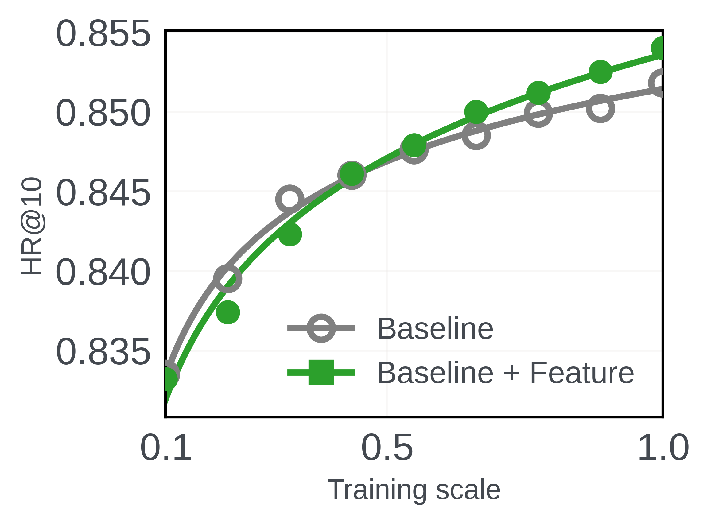
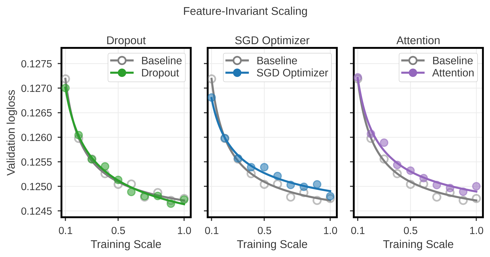
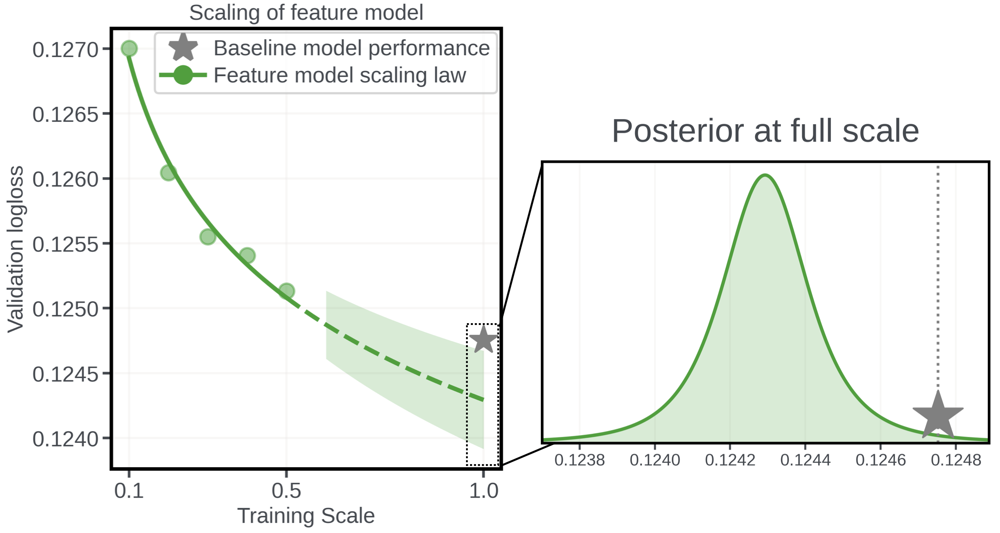
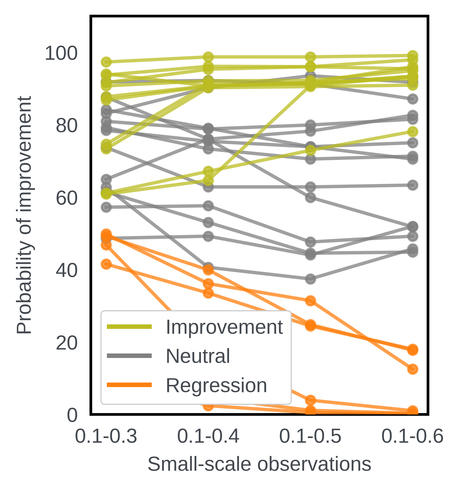
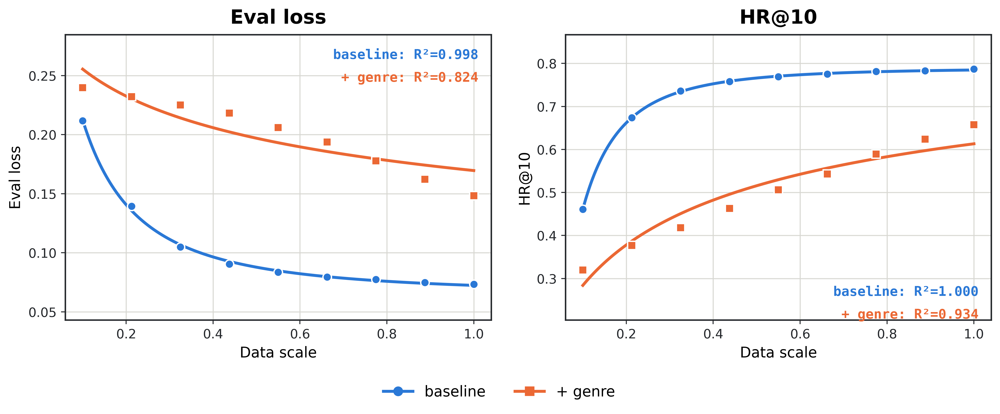
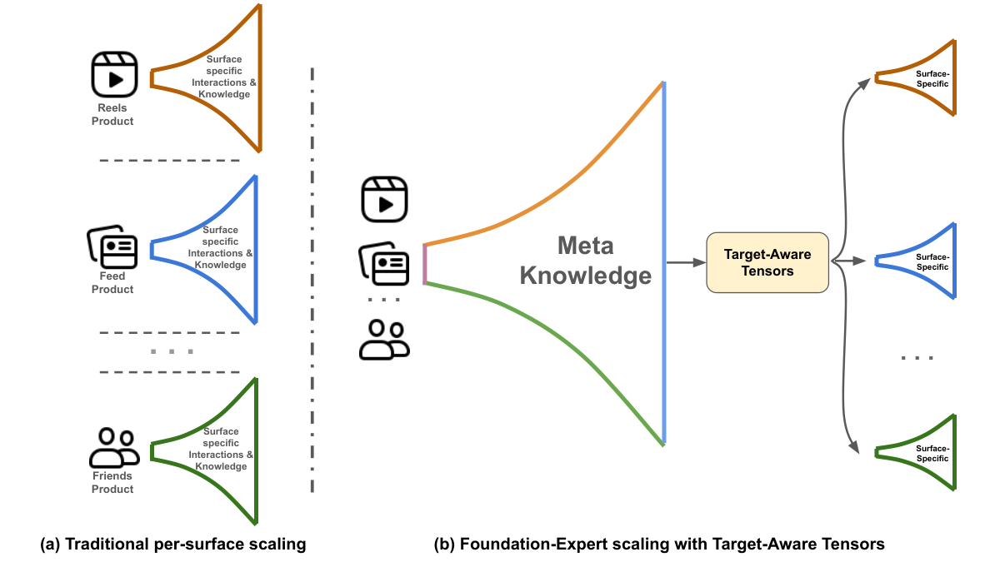
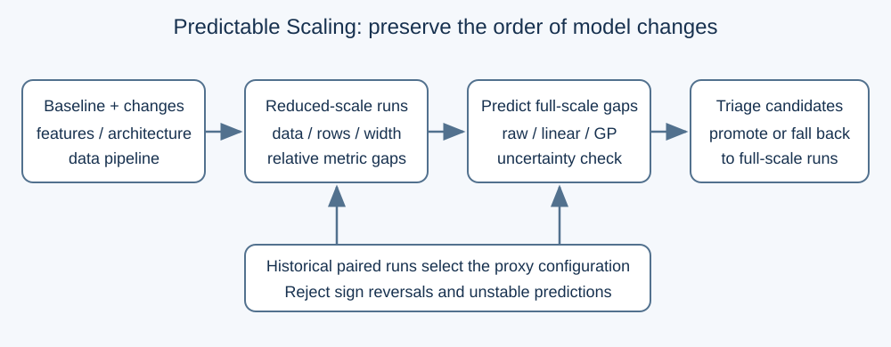
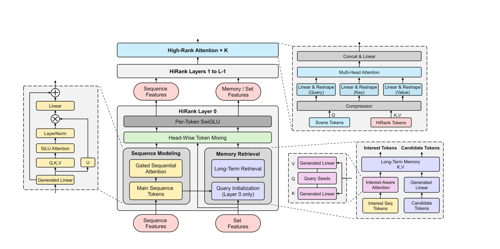
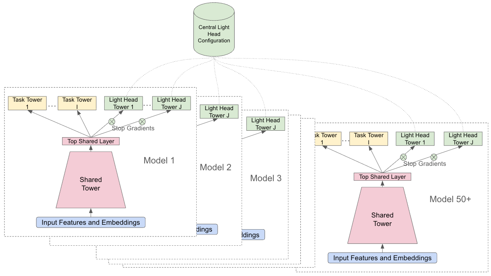
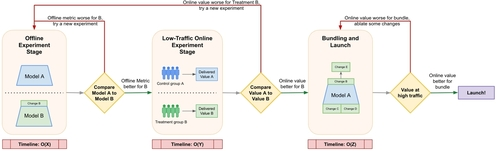

目录 · 7 节
1一次小实验会把有用的改动砍掉2好改动和坏改动，loss 曲线是同一种形状3五个小规模点怎样变成一个概率4五个小规模加起来，约是一次全量的 55%5HSTU 上多数判对，也有误放和漏掉6回到加类型：它在哪里会失灵7用小规模训练换一个概率Meta 这篇论文的判断是：推荐模型的一个改动该不该上全量，不该看一次小规模实验的输赢，而该看它在五个小规模上连出的 loss 曲线外推到全量时，比基线好出一个门槛（HSTU 上取 1%）以上的概率有多大。
一次小实验会把有用的改动砍掉
推荐团队改进模型，靠的是一个个候选改动：换 attention 结构、换优化器、给模型加一路新特征。确认一个改动有用的标准做法是全量 A/B：把改动加进线上模型，用全量模型、全量数据从头重训，再和对照组比。工业界的候选改动可能有几百个，每个都重训一次全量，算力扛不住。
本文用一个贯穿的例子：给 LLM 推荐模型的训练 prompt 里加电影类型。示意：原来 prompt 里写「看过：玩具总动员（打分 5）」，加了之后写「看过：玩具总动员｜动画/喜剧（打分 5）」。类型信息会让 prompt 变长、推理变慢，所以只有收益明显才值得加。
常见的省钱办法是先跑一次小规模实验：缩小模型、只用一部分数据，没提升就砍。论文的动机例子正好说明这样会出错。在 MovieLens-20M 上，加了类型的实验组在小规模时 HR@10 低于对照组，到全量反而明显更好。只看小实验，这个有用的改动就被砍掉了。

换一个大一点的单一规模也救不了。作者在多种改动上看到，不同类别的改动会在不同的小规模上翻转方向，事先没法知道哪个规模的信号靠得住。
好改动和坏改动，loss 曲线是同一种形状
上一节那张图里两条曲线虽然交叉，各自却都很规整。作者用幂律 Loss = θ1·N^θ2·D^θ3 去拟合（N 是参数量，D 是训练数据量），基线和实验组的 R² 都超过 0.99，只是系数不同。
作者把这个现象叫 feature-invariant scaling：不管加的改动是好是坏，模型验证 loss 随规模的变化都落在同一族幂律里。「同一族」指函数形式相同，不是曲线重叠。 Hoot 说

示意，非论文结果：横轴是训练规模 s，和图 3 一样把模型和数据两个缩放维度合成一个轴；a、c 为示意系数。
出处
函数形式见论文 §3、§4（图 3、表 1），θ1、θ2、θ3 写法见 §5.2；合成训练规模轴见 §5.3；a、c 为示意Wukong 是一个做 Criteo 点击率预测的推荐模型，作者给它分别加 dropout、把优化器换成 SGD、加一层 attention（图 3）。dropout 有益，SGD 有害，三条曲线的 R² 仍是 0.9953、0.9923、0.9876（表 1）。

三个面板的曲线都不和基线重合，SGD 那条还和基线交叉，形状却都是先陡后平。
扩到 Wukong、HSTU 和 LLM 推荐三族模型的 40 多个改动，幂律拟合的 R² 在 0.9743 到 0.9989 之间（表 2）。这说明函数形式可以事先定下来，每个改动只需估自己的幂律系数。作者称这是首个指出这一点的工作。
五个小规模点怎样变成一个概率
前提是基线的全量验证 loss 已知，这在工业界是常态：线上模型本来就训好了。整个流程只训练实验组，分四步：
| 步骤 | 输入 | 操作 | 产出 |
|---|---|---|---|
| 1 | 一个候选改动 | 在规模 0.1、0.2、0.3、0.4、0.5 各训一次 | 五对（规模，验证 loss） |
| 2 | 五对观测 | 沿实际用到的缩放路径（规模 0.1、0.2……）拟合一条幂律曲线 | 一条幂律曲线和残差噪声 σ |
| 3 | 拟合结果 | 外推到全量规模 1.0 | 全量 log loss 的 Student-t 分布 |
| 4 | 这个分布 | 算它落在「基线 loss×0.99」以下的面积 | 一个概率，超过 90% 才放行 |
第 3 步给一个分布，而不是一个点。噪声 σ 也是从这几个小规模点估出来的，所以用尾巴更粗的 Student-t 分布，点越少越粗。分布的中心是拟合曲线外推到全量规模处的 log loss，宽度是 σ 乘一个系数，这个系数由小规模点的位置和全量离它们多远决定，外推越远越宽。它描述的是只看了这几个小规模点时，对全量 log loss 落在哪里的估计有多不确定，论文称之为条件于小规模观测的后验分布。
第 4 步的门槛定在「好 1% 以上」，只比基线好一点不算数。边际收益不值得上线，加类型这种会拖慢推理的改动尤其如此。作者引 HSTU 论文的说法：工业场景 loss 降 0.1%，通常能带来十亿级用户上 0.5% 以上的核心指标提升。
回到加类型的例子，下面是一组示意数字，看中间产物长什么样。假设五个点拟合出的曲线大致是「规模每翻一倍，loss 乘 0.98」，0.5 规模的 loss 是 0.1250。从 0.5 到 1.0 正好翻一倍，全量预测的中心就是 0.1250×0.98 = 0.1225。
基线全量 loss 设为 0.1226。加类型属于 LLM 推荐，门槛按 0.05% 算：0.1226×0.9995 ≈ 0.12254。第 3、4 步的产出写出来是这样一行（示意）：
{中心: 0.1225, 90% 区间: [0.1219, 0.1231], 门槛: 0.12254, 低于门槛的概率: 0.57}中心值已经低于门槛，只看点估计会放行；但区间两端跨过了门槛，概率 57% 不到 90%，规则不放行。这说明这条规则在防的是「五个点的噪声恰好把曲线压低了一点」这种情况。

五个小规模加起来，约是一次全量的 55%
模型和数据同时缩小时，规模 0.5 意味着模型和数据各缩一半，成本约为全量的四分之一。五个点的成本依次约为 0.01、0.04、0.09、0.16、0.25，加起来是 0.55。所以每个改动花一次全量一半多一点的算力，换来的是一个带置信度的判断。
作者还提到另一层好处：实验机的显存常常放不下全量模型，这时全量 A/B 根本跑不了，缩小模型是唯一的办法。
这笔账只在模型和数据一起缩时成立。论文的 LLM 实验固定模型、只缩微调数据，每个点的成本只随数据量下降，0.55 这个数就不适用了。
HSTU 上多数判对，也有误放和漏掉
主实验用 HSTU 做 MovieLens-20M 的下一部电影预测。全量是 HSTU-large（embedding 维度 256、16 个 block、8 个头），规模 0.1 缩到 26 维、2 个 block、1 个头。三个维度一起缩，是为了让小模型和全量保持相近的形状。每个改动在 0.1–0.5 上训练，按「好 1% 以上的概率 >90%」做决定。
下表挑了几行，涉及的改动先说清楚：Wider Head 48 把每个注意力头的 Q/K/V 维度从 32 加到 48；Attn Res 让每个 block 学着加权读取前面所有 block 的输出；Extra Block 多加一个 HSTU block；Time Gap Bias 按两次交互的间隔时间给 attention 加一个学到的衰减。Softmax 把 HSTU 原来逐点的 SiLU attention 换成 softmax attention；Weight Decay 0.1 把 AdamW 的权重衰减从 0 改成 0.1；HSTU 的 attention 里还有一项 RAB（相对注意力偏置，按两个位置的距离和时间差加的偏置），No Temporal RAB 就是去掉其中的时间项。
| 改动 | 0.1–0.4 的概率 | 0.1–0.5 的概率 | 全量 loss 实际变化 | 按 90% 规则 |
|---|---|---|---|---|
| Wider Head 48 | 98.7% | 98.7% | −7.3% | 放行，判对 |
| Attn Res | 64.6% | 90.8% | −1.5% | 放行，判对 |
| Extra Block | 67.1% | 72.9% | −1.3% | 漏掉一个好改动 |
| Time Gap Bias | 78.8% | 79.9% | −0.8% | 不放行，没到 1% |
| Softmax | 92.2% | 91.2% | +1.0% | 误放一个坏改动 |
| Weight Decay 0.1 | 17.7% | 3.9% | +16.6% | 拦下 |
| No Temporal RAB | 4.6% | 1.1% | +8.7% | 拦下 |
这说明大的好坏都分得很清楚：全量好 7.3% 的和坏 16.6% 的，概率分别在 98.7% 和 3.9%。出错集中在全量变化 1% 上下的改动，Softmax 实际变差 1.0% 却拿到 91.2%，Extra Block 实际好 1.3% 只有 72.9%。Attn Res 那一行也说明点数有用：四个点时 64.6%，加上 0.5 才过线。

图 6 里，实际有益的改动随着点数增加，概率大多升向 100%，有害的降向 0。作者还报告，全量 loss 的样本外预测误差也随点数增加而变小。
论文还列了几个有益改动的例子：放回 HSTU-large 后，MovieLens-20M 上的 HR@10 从基线 0.3567 变为 0.3581–0.3603。最高的是 Time Gap Bias（+1.01%），其次 Dropout 0.1（+0.64%）。我的理解是：Time Gap Bias 的 loss 只降了 0.8%，没过 1% 门槛，HR@10 却涨得最多，这意味着 loss 门槛和最终的排序指标并不完全对齐。
回到加类型：它在哪里会失灵
Wukong 和 LLM 推荐上的改动效果都在 1% 以下，作者对它们改用 0.05% 的门槛。贯穿例子的加类型在 Llama-3.1-8B 上全量 loss 降了 0.5%，但 0.1–0.5 五个点给出的概率只有 60.2%，加到 0.6 才到 91.1%。所以加类型这一例要到第六个点才过线。
Wukong 的 Attention 也一样摇摆：0.1–0.4 给 92.2%，加上 0.5 掉到 0.0%，全量实际变差 0.1%。这说明点不够多时，结论会随着加一个点而翻转。
同一个改动换一个底座，结论也可能相反：加类型让 Llama 变好，却让 Qwen 变差。两种情况下幂律仍然成立，方法仍能预测对方向。
真正让方法失灵的是幂律本身不成立。在 Qwen-0.5B 上加类型后，loss 曲线不再贴合幂律，图里的 R² 只有 0.824，效果也明显差于基线。作者的猜测是类型信息让上下文长了约 30%，小模型装不下。这时外推出来的概率就没有依据了，作者承认这类情况会妨碍方法，但认为不常见。

用小规模训练换一个概率
回到开头的问题：加不加电影类型，一次 0.1 规模的实验会给出「别加」。这篇论文的做法是多花几次小训练，把小规模点连成一条幂律，再问它外推到全量时有多大把握越过门槛。对加类型本身，0.05% 门槛下五个点只给出 60.2%，加上第六个点才过 90%。
这套办法省下的是全量重训，换来的是一个会出错、但错在哪里看得见的概率：HSTU 上的误判集中在全量变化 1% 上下的改动，失灵发生在曲线本身不像幂律的时候。
读完这篇，你觉得
夜读鸮记下了，谢谢你的反馈。
点一下即可，无需登录；再点一次撤回。只统计匿名次数，不记录你是谁。
相关论文RELATED

Generative · 2026-04-07Realizing Scaling Laws in Recommender Systems: A Foundation-Expert Paradigm for Hyperscale Model Deployment多个推荐场景都想用上一个大模型，蒸馏和静态用户向量只能传过去一小部分收益。Meta 的做法是让中心大模型为每个候选物品实时算一个结合用户全部历史的向量，各场景的小模型把它当输入特征，而不是当软标签去模仿。中心模型变强后，下游能吃到 64% 到 100% 的提升；已在 Meta 全量上线，单场景大盘指标提升 0.050%。
Personalization · 2026-10-20Predictable Scaling: Efficient Model Exploration via Scaling-Law Prediction排序模型每次改动都跑完整训练，成本很高。Predictable Scaling用缩小的数据和网络预测改动收益，再用历史学习曲线估计误差；两个工业排序模型的训练计算量分别减少88%和79%。
Personalization · 2026-10-28Unified Heterogeneous Feature Interaction via Effective-Rank Scaling for Recommender Systems多数线上排序模型先把用户行为序列压成一个固定向量，再交给特征交叉模块，之后的交叉层就看不到具体是哪几次点击、哪几次加购。阿里淘宝的 HiRank 把行为序列一直保留到主干的每一层，并让长期历史的检索 query 从最近的行为序列生成，而不是从年龄、性别这类静态画像生成。在淘宝首页 CVR 预估上，GAUC 从同等参数量下最强基线的 0.7615 提到 0.7801。线上 A/B 中，人均订单数提升 2.27%，人均 GMV 提升 2.86%。 Personalization · 2026-09-01HubMixer: Progressive Latent Hub Mixing for Parameter-Efficient Feature Interaction in Recommendation针对推荐与广告排序中异构特征直接全量混合导致参数浪费的问题，HubMixer 用少量可学习 latent hub 依次执行特征归纳、hub 间高阶交互和 token 条件化回写，复杂度从 token 两两交互转为与 T×H 成正比。快手招聘短视频业务的 7 天 A/B 测试覆盖 7.2% 流量，简历投递转化率显著提升 5.48%，模型已全量部署。
Personalization · 2026-09-01HubMixer: Progressive Latent Hub Mixing for Parameter-Efficient Feature Interaction in Recommendation针对推荐与广告排序中异构特征直接全量混合导致参数浪费的问题，HubMixer 用少量可学习 latent hub 依次执行特征归纳、hub 间高阶交互和 token 条件化回写，复杂度从 token 两两交互转为与 T×H 成正比。快手招聘短视频业务的 7 天 A/B 测试覆盖 7.2% 流量，简历投递转化率显著提升 5.48%，模型已全量部署。
Personalization · 2026-11-03Lightweight Ranking Heads: Accelerating Multi-Task Experimentation in Production Recommender Systems多任务排序模型做得越大，加一个新预测目标就越慢。YouTube 的办法是新目标不进主模型，而是做成一个挂在共享层上面的小预测头（论文叫 Light Head）。它只读共享层的输出、不往下传梯度、每次训练开始时清零重学，所有排序模型从同一份配置里读到它。用上这套框架后，排序模型加下游模型的一轮完整实验周期从 24 天缩到 11 天。代价是点击这类数据多的任务，AUC 比完整训练的预测头低约 0.01。
Personalization · 2026-10-24A Framework for Value-Aligned Modeling and Robust ExperimentationGoogle Discover 广告团队的模型迭代里，离线结果和线上结果对不上：转化模型离线损失的变化和线上广告主价值的相关系数只有 0.1，大量离线变好的改动在小流量 A/B 阶段失败。这篇论文把离线损失按每次点击对广告主值多少钱加权，让损失下降对应到价值上升。改完以后，离线到线上的相关系数升到 0.65，两类模型换用新目标后线上价值合计提升 4.7%。
讨论
欢迎补充实验细节、复现经验或不同看法。需 GitHub 登录。
正在加载讨论…